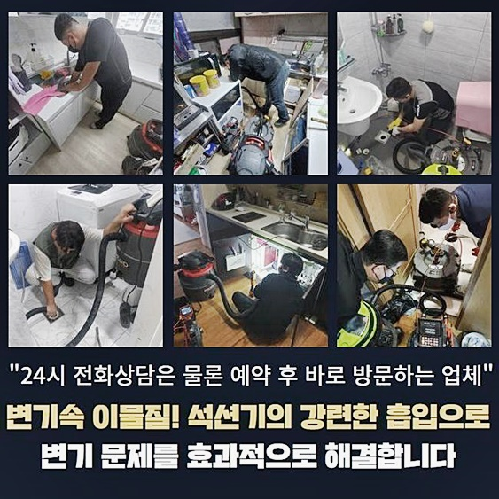
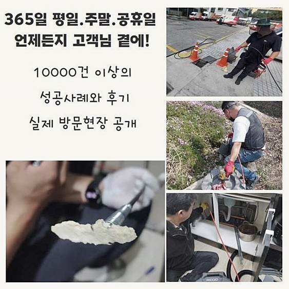
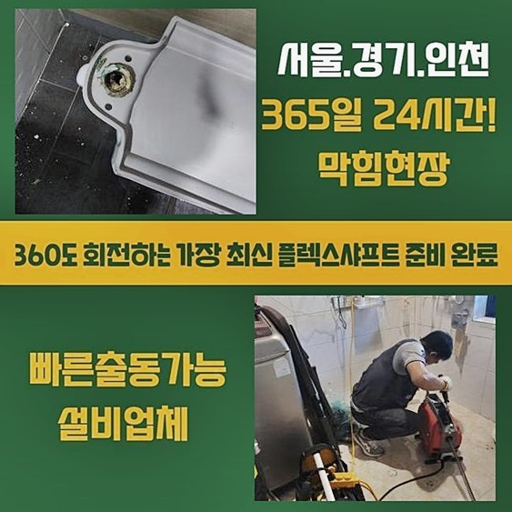
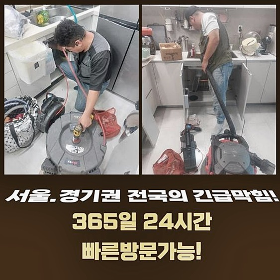
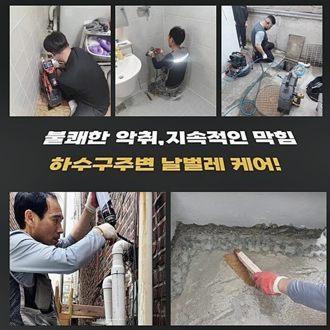
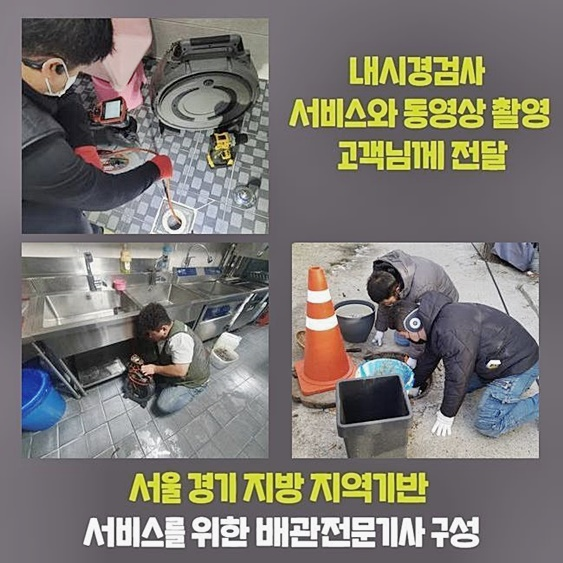
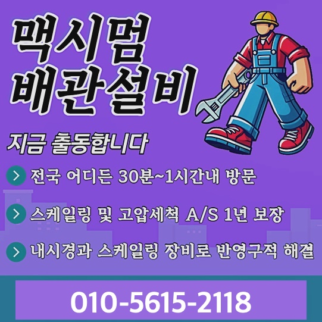

🏠 청북읍대변기역류 송탄동 집수정청소 배관뚫는업체
용인시 처인구 고압세척 전문 시공 후기

📋 작업 개요
- 위치: 용인시 처인구, 수원시 영통구, 화성시 동탄
- 서비스 유형: 고압세척, 내시경점검
- 작업 일시:
- 업체명: 하수구수사대 (010-5615-2118)
🔍 문제 상황
하수라인이 꽉 막혔다면 배관 내부를 보는 기기를 적절히 쓰면서 진단후 순환하지 못하는 물길을 찾아내서 뚫어내는 일이 이뤄지게 됩니다
건물 안의 상황뿐만 아니라 외벽에 설치한 하수라인이 통수되지 않는 상황이라면 전체적인 진단으로 수리과정이 진행됩니다
청북읍대변기역류 송탄동 집수정청소 배관뚫는업체
외벽에 있는 배관들은 관만 봐도 매우 단단하고 모든구간이 복잡하기에 진단을 보는것부터 물을 순환시키는 이물질제거 작업들까지 고난이도의 과정입니다
위의 사례와 같이 건물 바깥쪽에 위치한 문제로 생각되신다면 많은 경력이 요구되는 전문작업이 필요하기에 검증이 완료된 업체들을 알아보시고 현장의 문제사항을 상담하시기 바랍니다
이번현장은 주차지역에 매립되어있는 메인 배수관로가 막혀버린 문제가 발생했습니다
우선 메인배관들이 연결되어 있는 바깥쪽 하수라인에대한 진단을 진행하게되었습니다
관리업체 말에 따르자면 바깥쪽 하수구부터 큰본관까지 종합적으로 막혀서 발생하는 문제가 매우 심하다고 이야기 해주셨습니다

🔎 원인 분석
💡 전문가 진단: 정밀 진단 장비를 사용하여 슬러지의 고착 여부를 판명하고 타격/세척 작업을 실시했습니다.
불순물의 성격을 유추해냅니다
다음으로 높은 위치에있는 배관작업을 이행해야 하는데 천장에 위치해 안전한 여건이 갖추어지지 않아 먼저 사다리 배치후 진행했습니다
안전하게 일 할수있는 환경들이 확인되어야 일도 문제없이 이루어집니다
첫번째로 천장을 가로지르는배관들은 여러개로 이루어져있는데 문제가 된 부위를 찾아낸뒤, 해당 부분으로 내시경기기를 써서 통로 내면의 정체 현상을 진단하고 불순물의 성격을 밝혀냅니다
이러한 작업에서 배관의 안쪽으로 안을 볼수있는 선들을 집어넣기위해 배관라인에 타공작업이 필요시됩니다
구멍을 내는 공구를 이용해 장비선의 선이 넣어지는 최소의 크기로 타공후 바로 내시경을 집어넣어 전체를 위한 점검을 시작했습니다
모든과정이 완전히 종료되고 난 이후에 타공위치에 관하여 전문가의 깔끔한 마무리로 추후 발생할 수 있는 다른 오류에 신경쓰시지 않토록 하겠습니다
이러한 진행과정으로 배관들 안쪽 불순물의 상태를 밝혀낼수 있습니다
역시 중요 하수관의 모든 부분에 노폐물이 축적된 상황이었고 바깥쪽 하수배관으로 쭉 이어진 장소까지 단단히 굳은 상당한 양의 찌꺼기가 이러한 상황을 야기시켰습니다

🔧 작업 과정
배관벽에 오염물이 쌓여 형성한 하수라인 슬러지들은 위로 점점 오염물이 새롭게 쌓이며 두터워지고 물이 흐르는 배관들이 서서히 조여지며 막히는 일이 일어납니다
플렉스샤프트로 단단한 슬러지들을 제거하면서 작업이 완료되었습니다
안쪽을 진단해보니 메인배관들이 연결된 관통의 가생이 가까운 곳에 상당한 양으로 축적된 침전물을 찾아냈습니다
특히 많은 양의 오염수가 흐르는 메인라인과 바깥 하수구들 안에는 쉽게 노폐물이 쌓이고 석회화 되어버린 침전물들은 매우 딱딱하고 완전밀착되는 성질로 순환을 방해합니다
이처럼 하수구에 대한 샤프트기기를 이용한 작업과정으로 남는 잔여물이 없도록 하여 반복적으로 문제가 재발하는 케이스를 방지합니다
작은구멍을 냈던 메인배관 부위로 안을 불수있는 케이블을 집어넣어 막혀있는 수준을 파악하고 오염물질 제거과정을 시작하려는데 이번처럼 평균이상의 관인 경우에 일반적인 장비들로 전문적인 해결이 어려워요
왜인가하면 모든 배관라인에 대하여 오염원제거 작업이 착수되는데 플랙스샤프트나 흡입기계는 일정한 지점을 나눠 조심스러운 오염원 제거가 가능하므로 너비가 상당한 메인배수관에 일반적인 장비 사용으로는 비합리적인 시간들만 요구되게 됩니다
이러한 경우에는 높은압력으로 세척이 가능한 기계를 적절히 쓰면서 막힌 문제를 해결합니다
종합적인 하수시스템의 모양에 맞춰 분사구 조준선을 지정하고 강한 압의 물로 파쇄시키며 노폐물이 굳어있는 벽면과 하수관 내부쪽를 확실하게 세정해내는 과정이 제대로된 작업입니다
강한 압력의 기기 사용이 반복적으로 진행되면서 분사위치를 다각도로 발사하고 강한 압의 물로 배관 내벽의 침전물을 파쇄합니다
굳어져있는 현상도 심각한 현장인데 본관의 특성상 불순물의 양도 많았기에 그대로 두었다간 오수가 역류하는 일이 더 자주 일어날거라고 예측 되었습니다
이후에 비슷한 문제들이 일어나지 않게끔 전용 기기를 활용하여 잔여 오염물이 없도록 구석구석 높은 압력으로 이물질제거를 마쳤습니다
이처럼 모든 작업이 끝나게 된후 타공이 이루어졌던 메인 배관의 일부지점을 처음처럼 막는 과정을 착수시키고 오늘 스케쥴을 종료할수 있었습니다
이후에 배수관 문제로 어려움이 생기지 않게 꼼꼼하게 타공이 완료된 부분을 메꾸었고 앞의 작업을 통해 오수가 흘러가는 데 있어서 불편함은 없도록 조치했습니다


✅ 작업 완료
이후로는 혹시 또다른 이상들이 발견되는지 순환이 원활하게 되는지 살펴보았고 메인의 배수관에서 건물 바깥쪽 하수배관까지 역류 현상없이 순탄하게 하수가 내려가는지 일괄적으로 확인하였습니다
내부의 침전물이 생활에서 발생되는 물질로 막힌다면 메인 배수관부터 바깥 하수구들까지 배수가 종합적으로 약해지므로 바로 시공의뢰를 하시는게 바람직합니다
문제발견시 외부의 도움없이 섣불리 해보는것보다 전체적인 탐색을 해보고 적절한 방법을 사용하여 점검이후 플랙스샤프트 기기등을 적용하는것이 안전한 방법이라고 할수있습니다
도움을 요청하실 분들은 편안한 마음으로 문의주세요




⚠️ 하수구 배관 막힘 예방 및 관리 가이드
- ✅ 머리카락, 비닐, 물티슈 등 물에 분해되지 않는 이물질은 절대 흘려보내지 마세요.
- ✅ 기름기 많은 식기는 설거지 전 키친타올로 먼저 기름때를 닦아내세요.
- ✅ 주기적으로 배수구에 뜨거운 물을 가득 부어주어 유지방 고착을 방지하세요.
- ✅ 작업 후 1년 이내 재발 시 무상 A/S 보증 서비스를 제공합니다.
💡 핵심 정리
- 확실한 장비 작업(내시경 점검 및 샤프트 스케일링)으로 원인을 뿌리 뽑습니다.
- 작업 후 1년 이내에 동일한 부위 재발 시 100% 무상 A/S 서비스를 보장합니다.
- 서울 · 경기 · 인천 전 지역에 24시간 언제든 긴급 출동할 수 있도록 항시 대기 중입니다.
❓ 자주 묻는 질문 (FAQ)
🚨 용인시 처인구 고압세척 문제로 고민이신가요?
정확한 원인 진단과 확실한 시공으로 재발 없는 해결을 약속드립니다.
24시간 긴급 출동 | 서울 · 경기 · 인천 전지역 | 1년 내 재발 시 무상 A/S